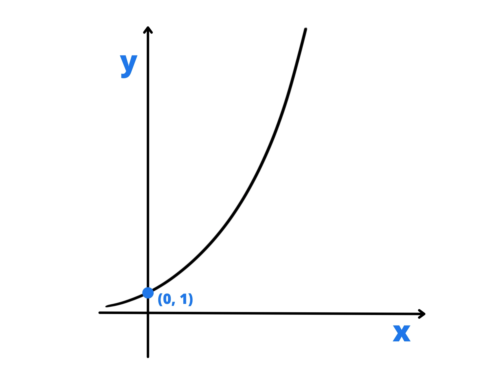
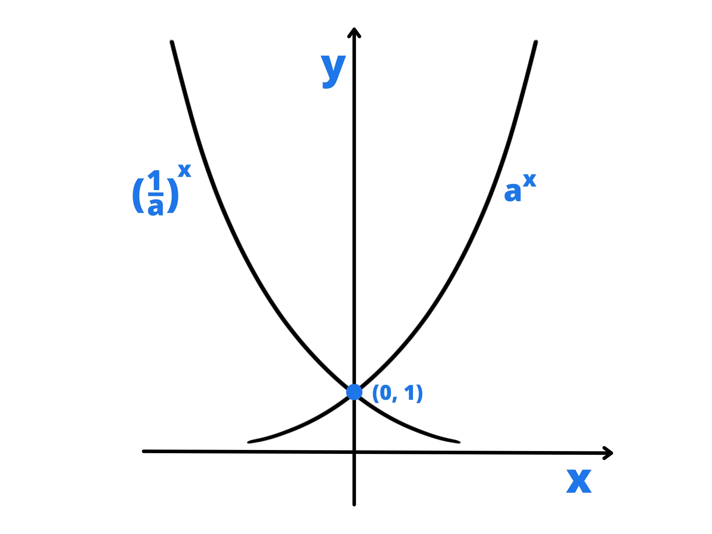

Una funzione esponenziale è una funzione espressa da una potenza con base fissa ed esponente variabile, ovvero una funzione del tipo:
\(f(x)=a^x\)
Esempi di funzioni esponenziali sono:
\(f(x)=2^x\)
\(f(x)=4^x\)
\(f(x)={0.5}^{x}\)
\(g(x)={13.179}^x\)
Non sono invece funzioni esponenziali le seguenti:
\(f(x)=x^2\) perché è espressa da una potenza con base variabile ed esponente fisso.
\(f(x)=2^3\) perché è espressa da una potenza con base ed esponente fisso ed è infatti una funzione costante in realtà.
Le funzioni esponenziali con base maggiore di \(1\) hanno alcune proprietà.
Innanzitutto è una funzione positiva. Infatti la sua immagine I è l’intervallo \((0;+\infty)\).
Inoltre è una funzione monotona crescente (aumenta sempre) ed è quindi anche biunivoca. Questo è molto importante perché ci permette di definire una funzione inversa, il logaritmo, che vedremo in un’altra lezione (qui).
Utilizzando alcuni strumenti più complicati, ovvero le derivate, possiamo definire il fatto che più si fa aumentare \(x\) e più \(f(x)\) aumenta velocemente. Questo andamento viene chiamato crescita esponenziale.
Se avete mai sentito dire che qualcosa sta “aumentando in modo esponenziale” e vi siete chiesti da dove venga questa espressione, ora sapete che si dice così per via dia questa sua proprietà.
Nel caso in cui la base sia \(1\), siccome \(1^n=1\) per ogni \(n\), otterremo la funzione continua:
\(f(x)=1\)
Stessa cosa nel caso in cui la base sia uguale a \(0\). L’unica differenza è che ad \(x=0\) otterremo \(0^0\) che non è definito.
Per gli altri valori tra \(0\) ed \(1\), però, otteniamo delle funzioni più interessanti. Queste funzioni si comportano esattamente come quelle con base maggiore di \(1\), ma al contrario. Ovvero, sono anche loro sempre positive, ma questa volta sono monotone decrescenti e “diminuiscono sempre più lentamente”.
Perché avviene questo?
Prendiamo un numero \(b>1\). La funzione simmetrica rispetto all’asse \(y\) di \(f(x)\) è \(f(-x)\). Se troviamo il simmetrico della funzione:
\(f(x)=b^x\)
Otteniamo:
\(f(-x)=b^{-x}={1\over {b^x}}=({1\over b})^x\)
Abbiamo che \(1/b=a\) dove a è un numero minore di \(1\). Quindi per via di questa simmetria tra funzioni esponenziali con basi maggiori di \(1\) e funzioni esponenziali con basi tra \(0\) ed \(1\) che abbiamo questo comportamento opposto.
Perché non possiamo prendere basi negative?
Questo perché funzioni esponenziali con basi negative hanno valori che non appartengono ai numeri reali. Ad esempio nel punto \(x={1\over 2}\), la funzione vale:
\(f({1\over 2}=a^{1\over 2}=\sqrt{a}\)
Ed è impossibile nei numeri reali fare la radice quadrata di un numero negativo.
Oltre al caso \(x={1\over 2}\) abbiamo infiniti altri casi analoghi in cui non otteniamo valori reali, per questo non ci interessano per ora.
La funzione esponenziale \(e^x\)
Tra tutte le funzioni esponenziali ce n’è una che è più importante di tutte: quella che ha come base il Numero di Nepero.
Essa ha infatti alcune proprietà extra che la rendono veramente speciale, facendole ottenere un posto nell’Olimpo delle funzioni matematiche. Queste proprietà extra richiedono però matematica più avanzata e le studieremo più avanti.
Talvolta infatti quando si dice “funzione esponenziale” è sottinteso che ci stiamo riferendo ad essa e non ad una funzione esponenziale generica. Spesso la troverete scritta come \(exp(x)\) (notazione usata dalla maggior parte delle calcolatrici scientifiche).